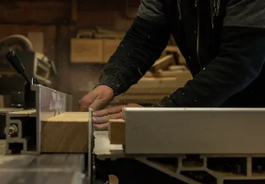
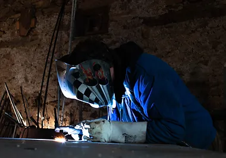

Découvrez La Crouzié Des Métiers : Promouvoir, Préserver et Transmettre les Savoir-Faire
Au cœur d'un environnement dynamique et diversifié, l'association La Crouzié Des Métiers s'engage passionnément dans la valorisation, la conservation et la transmission d'une vaste gamme de savoir-faire. Notre mission est aussi diversifiée que nos membres, englobant les métiers de l'artisanat, les compétences agricoles, culinaires, artistiques, et bien plus encore.
Une palette d'opportunités !
Nous offrons une multitude d'opportunités pour atteindre ces objectifs ambitieux :
- Locations d'espaces de travail :
La Crouzié met à disposition un espace de travail partagé où des artisans indépendants ont établi leurs entreprises. Cette mutualisation de ressources, de matériel et de compétences facilite le quotidien de nos membres.
- Fabrication accompagnée :
Pour ceux qui ont besoin de soutien technique ou d'accéder à des équipements spécifiques, nous proposons une assistance à la fabrication d'objets.
- Stages et formations :
Notre association organise régulièrement des stages et des formations pour l'acquisition de nouvelles compétences ou le perfectionnement des techniques existantes.
- Échanges et partage :
Nous encourageons vivement les échanges et la collaboration entre nos membres. Ces interactions favorisent la transmission des savoirs et l'enrichissement mutuel.
- Évènements publics :
La Crouzié ouvre ses portes au public lors d'évènements ponctuels, permettant ainsi de sensibiliser la communauté locale aux métiers de l'artisanat et de mettre en avant le talent de nos membres.
- Intervenants extérieurs :
Nous sommes également ouverts à l'accueil d'intervenants extérieurs pour présenter leurs métiers et compétences, élargissant ainsi nos horizons.
Un modèle économique responsable !
Les activités économiques de l'association, telles que les locations d'espaces de travail et les accompagnements, génèrent des revenus. Cependant, ces revenus sont réinvestis de manière exclusive dans le bon fonctionnement de nos ateliers et la rémunération équitable des artisans présents.
Une vision de partage et de croissance !
Notre lieu de travail partagé incarne la volonté première de mutualiser les lieux, les équipements, et les compétences pour alléger la charge quotidienne de nos membres.
La Crouzié Des Métiers a pour vocation de favoriser la transmission des savoirs artisanaux, de soutenir la mutualisation des moyens techniques, et de valoriser les échanges entre professionnels. Pour concrétiser cette vision, nous avons récemment élargi nos espaces de travail, offrant ainsi de nouvelles opportunités de location.
- Location ponctuelle à des professionels :
Vous êtes un travailleur indépendant (artisan, architecte, comptable, manager artistique...) et vous souhaitez utiliser un lieu de travail partagé pour répondre à un besoin ponctuel. Une journée, une semaine, un mois... venez travailler à la Crouzié le temps de la réalisation d'un projet spécifique ou pour répondre à un besoin technique que nous pouvons vous apporter (ateliers équipés de machines outils, cadre de travail agréable, échanges avec les autres professionnels du lieu...).
- Location longue durée à des professionels :
Vous êtes un artisan indépendant ayant une activité stable. Au delà de la gestion de votre entreprise, vous
avez le désir de transmettre votre savoir et de partager votre atelier.
Après quelques temps passés à la Crouzié (étape 1, minimum 6 mois), vous souhaitez vous impliquer davantage
dans la vie du Pôle (bois, métal, aiguilles) sur lequel vous travaillez. Vous devenez un des responsables et
serez donc en charge du bon fonctionnement de votre atelier. Vous avez ici l'opportunité d'accéder à un
poste de travail fixe et le devoir d'être acteur de l'association La Crouzié des Métiers.
- Devenir propriétaire via la SCI Epilibre :
Après au moins une année en étape 2, le développement de la Crouzié est devenu au fil des mois une priorité
pour vous et vous souhaitez vous engager pleinement dans la gestion des activités du lieu.
Vous avez la capacité de fonctionner en collectif : organisation, remise en question et évolution
personnelle, fiabilité, autonomie.
Un investissement humain et financier vous sera demandé. Vous serez co-décisionnaire, gardien des valeurs et
responsable de l'ensemble des actions du collectif. Vous serez en charge de l'entretien de votre espace de
travail mais aussi de l'ensemble des terres et des bâtiments appartenant à la SCI (10 ha).
Vous devenez un des propriétaires de la SCI Epilibre.
La Crouzié Des Métiers est un lieu dynamique qui favorise la collaboration, la transmission des savoirs et la mutualisation des ressources pour soutenir divers métiers et savoir-faire, le tout dans un cadre enrichissant et diversifié.
Voir les tarifs des locationsatelier des aiguilles

Un artisan des métiers de la couture (maroquinerie, sellerie garnissage, tapisserie d’ameublement,
cordonnerie, couture…) pour faire évoluer l’Atelier des Aiguilles.
Cet atelier déjà en place attend son deuxième travailleur pour être agencé. L’emplacement des machines
et espaces de travail reste à définir pour faire ensuite les aménagements nécessaires.
Espace atelier :
Local de 43m² fraîchement éco-restauré, équipé d’un poêle à bois.
Machines et outils :
Machines à coudre Singer 29K, Adler 69, Pfaff 450, Singer 49k, Singer de bourrellerie, Textima, machine
de couture tissus mécanique et électrique, pareuse, surjeteuse, presse à riveter, graveuse laser,
grande table de coupe.
atelier bois
Un artisan des métiers du bois (ébéniste, menuisier, charpentier, marqueteur, tourneur…) pour faire
évoluer l’Atelier Bois.
Cet atelier déjà en place attend son deuxième travailleur pour être agencé. L’emplacement des machines
et espaces de travail reste à définir pour faire ensuite les aménagements nécessaires.
Espace atelier :
Hangar de 125 m² composé du parc machine doté d’une aspiration centralisée avec un espace attenant isolé
de 36m². Ce second espace est chauffable en hiver pour réaliser les collages et les travaux de
finitions. Possibilité de stocker du bois dans un bâtiment annexe.
Machines et outils :
Scie à format, dégauchisseuse, raboteuse, scie à ruban, toupies, corroyeuse moulurière, scie radiale,
servantes roulantes, engins de levage (manitou), aspiration centralisée, compresseur, tour à bois,
ensemble
serre-joints.
atelier métal et forge
Un artisan des métiers du fer (serrurier, ferronnier, mécanicien de précision …) pour faire évoluer
l’Atelier Métal et Forge.
Cet atelier déjà en place attend son deuxième travailleur pour être agencé. L’emplacement des machines
et espaces de travail reste à définir pour faire ensuite les travaux nécessaires.
Espace atelier :
Grange couverte avec dalle de 160m². Les deux artisans ont un espace de 170m² supplémentaire pour
faire grandir l’atelier.
Machines et outils :
Plieuse manuelle (2100 x 4mm), plasma, scie à ruban, scie fraise, cintreuse à galet, poinçonneuse
cisaille grugeuse, TIG, semi auto, centreuse virax, tour à métal, fraiseuse, rectifieuse, presse,
perceuse à colonne, forge, marteau pilon, scie alternative...
Le collectif est à la recherche d'un autre artisan du monde de la couture, du bois
et du métal.
Pour plus d'informations,
veuillez contacter le 06.65.32.93.47 ou le 06.18.13.03.05 (SMS)
artisans

Léna, maroquinière, répare, crée et fabrique sur mesure des objets en cuir grâce à sa
machines Singer.
Elle est présente sur les marchés de Carmaux, Mirandol et dans des boutiques de créateurs.
Entreprise Léna Cuir

Pierre, pratique l'ébénisterie, la menuiserie et la charpenterie, travaillant à la fois
le bois et le métal, tout en mettant en valeur l'aspect artistique de mon métier artisanal. Son
approche
privilégie l'utilisation de matériaux naturels, recyclables et renouvelables dans la mesure du
possible.
Entreprise BMS conception

Francis, notre administrateur Facebook.
À la recherche d'artisans pour la location d'un espace de travail partagé dans un hangar
À la Crouzié Des Métiers, nous avons
actuellement un nouvel espace de travail de 125m² disponible à la
location. Ses dimensions
sont de 10 mètres par 12,50 mètres, avec une hauteur sous plafond de 3 mètres sur un tiers de la
surface et 5 mètres sur le reste. Cet espace est équipé d'un branchement triphasé, d'une dalle en
béton au sol et d'un grand portail mesurant 5,50 mètres de large. Vous avez également la possibilité
de diviser cet espace pour accueillir plusieurs artisans.
Notre atelier fait partie d'un lieu de travail partagé où d'autres artisans professionnels
sont
installés. Notre projet collectif vise à mutualiser les espaces, le matériel et les compétences,
avec une forte orientation vers le respect de l'humain et de l'environnement.
De plus, sur ce site, vous trouverez également une association dédiée à la valorisation des
savoir-faire, la Crouzié des Métiers, qui gère les bureaux partagés et offre un espace pour
accueillir le public dans les ateliers. La Crouzié est à la fois un lieu de travail et un espace
culturel grâce à l'association Debout Les Yeux, qui organise
régulièrement des événements et propose
un café associatif.
Si vous souhaitez en savoir plus sur notre lieu, n'hésitez pas à nous contacter pour prendre rendez-vous.